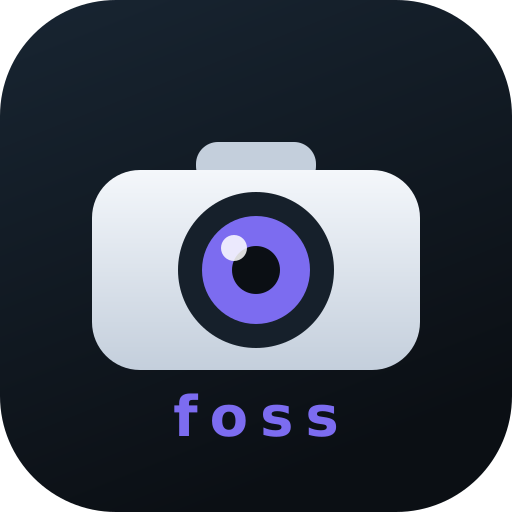

Sem conta, sem anúncios, sem telemetria.
Em vigor desde 24 de outubro de 2026.
Resumo em uma frase: o YooFree não coleta dados pessoais. O app fala apenas com a câmera que você indicar, na sua própria rede.
As permissões declaradas no APK são apenas: INTERNET, ACCESS_NETWORK_STATE e ACCESS_WIFI_STATE. Não há acesso a contatos, localização, microfone, câmera do celular, armazenamento externo amplo ou identificadores de publicidade.
Android/data/br.yoofree.app/files/YooFree/.As gravações são arquivos locais seus. Apagar o app (ou limpar os dados) apaga as gravações. O áudio reproduzido é recebido da câmera; o microfone do celular não é usado.
Doações via Pix são processadas pelo seu banco e pelo sistema Pix do Banco Central. Nós não recebemos dados além do que aparece no extrato da conta (como o nome de quem enviou). Nenhum dado de pagamento é coletado por este site ou pelo app.
O site aponta para o GitHub (repositório, releases e issues). Ao abrir esses links, valem as políticas do GitHub.
O app não é direcionado a crianças e, de qualquer forma, não coleta dados de ninguém.
Se algo mudar (por exemplo, algum recurso futuro que exija acesso a dados), esta página será atualizada e a data no topo será alterada. Mudanças relevantes também serão citadas nas notas da versão no GitHub.
Dúvidas sobre privacidade: abra uma issue em github.com/Wennington123/YooFree/issues.